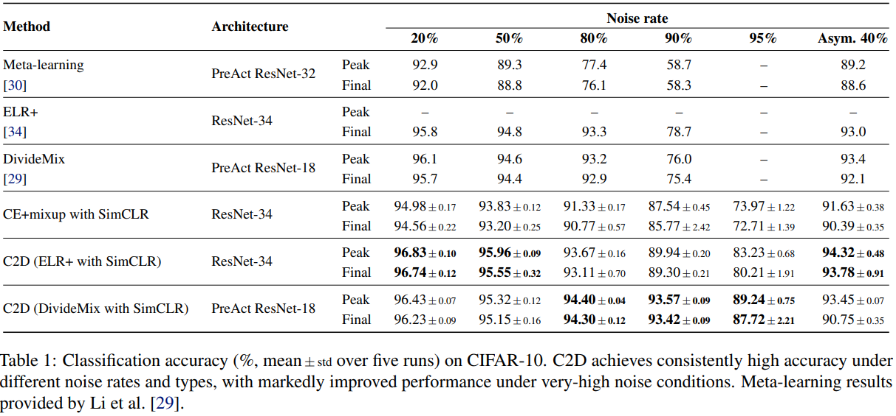
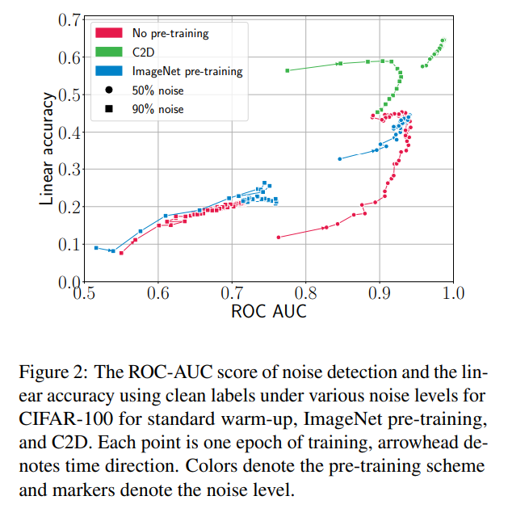

論文
・ Year ： ICLR 2021
・ リンク
・ github
１．どんなものか
noiseラベルを含むデータを用いた学習のうちwarm upに着目．通常はwarm up段階ではラベルあり学習を行いう．
ノイズを含むデータセットを用いる場合，この学習が後の学習に大きく影響を与え，ノイズデータセットではモデルが
ノイズデータに過適合してしまう．この問題を自己教師あり学習したモデルを学習済みモデルとして使用することで解決．
特に，ノイズ率の高いデータにおいて他の手法と比較し，性能向上が見られた．

また，論文内では自己教師あり学習，半教師あり学習
によるLNL性能についても言及している．
２．先行研究との差分
モデルの学習初期におけるノイズラベルデータへの過適合の決定的要因は未だ判明していない．そのため既存研究では経験則的なcnnの振る舞いを利用している．
既存の手法はwarm up時に強い正則化を用いることでノイズデータに対する過適合を防ぐが，これと異なり提案手法では正則などに用いるハイパーパラメータ
が不要である．
また，異なるノイズ率を持つデータセットに対しても一貫した性能を持ち，半教師ありベースの手法など他のLNL手法と容易に組み合わせることが可能である．
事前学習なし，Imagenetによる事前学習ありの場合と比較してClothing1Mのcleanデータに対するノイズの識別率は以下の通り．

３．技術や研究のキモ
warm upの段階を自己教師あり学習に置き換えることで，今までは深層学習の学習初期はノイズデータに汎化しにくいという経験則的な現象に従っていた 点について解消した．
４．有効性の証明
cifar10,cifar100,clothing1mで実験．
cifar10における実験結果
cifar100における実験結果
clothing1mにおける実験結果
webvisionにおける実験結果